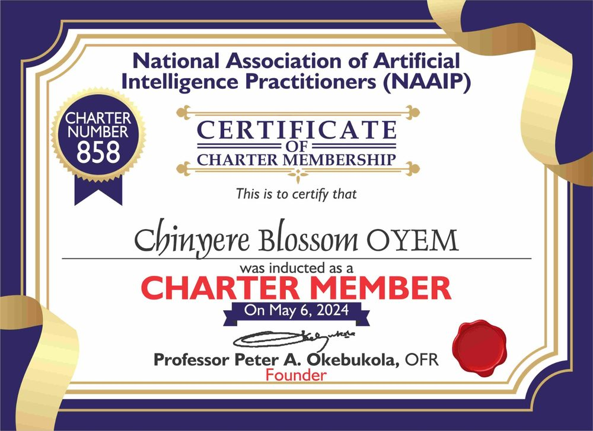
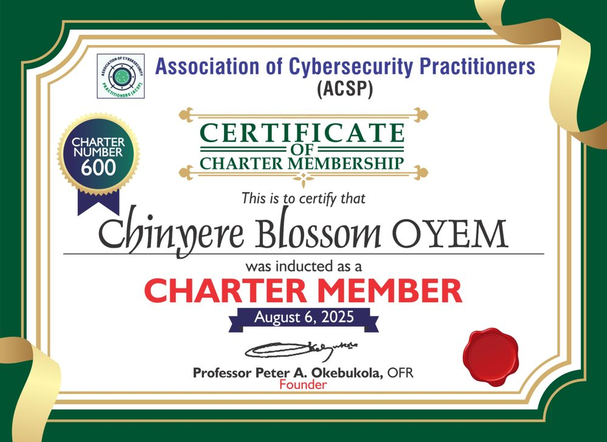
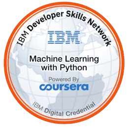
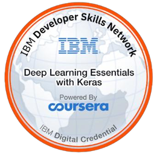
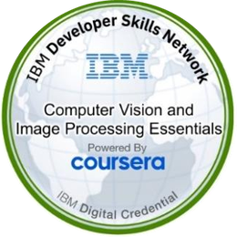
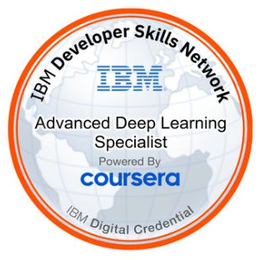

Building assistive & autonomous robotic systems for real-world impact
I'm Chinyere Blossom Oyem, a machine learning engineer and roboticist in Delta State, Nigeria, and Head of ICT at Rolof Institute of Management and Technology. My current research covers an assistive arm for speech-impaired cancer patients, a firefighting robot designed to re-aim when its first spray does not work, and a search-and-rescue planner for microcontroller-class robots.
Two papers accepted, two under review, one in preparation. See the publications.
each result feeds the next reading
Each result feeds the next reading.
Perceive
Cameras and low-cost sensors read the scene.
Decide
Models weigh the evidence and choose a target or a task.
Act
Servos, pumps and wheels carry the decision out.
Check
Did it work? Re-aim, re-plan or alert a clinician.
The same cycle runs through the three research projects below.
Research
Three systems that perceive, decide, act and then check the result. Each project page separates what has been measured from what is still planned.
A bedside webcam reads three gestures (zoom, pan, highlight) and an Arduino-controlled arm repositions a medical display. The same network, CDAM-Net, screens histopathology patches and posts results to a clinician dashboard. It shares one ResNet50 backbone between two very different kinds of image and adapts features per task to avoid negative transfer.
Papers
Pilot study in the FNAS Journal of Computing and Applications; extended CDAM-Net paper at ICARM 2026, held at the University of Évry Paris-Saclay, France.
Evidence
85.0% gesture accuracy, 94.0% patch classification accuracy and 0.82 s mean latency across 100 trials with 10 healthy volunteers.
Scope
Laboratory simulation. No patients yet; clinical validation is the next step.
A wheeled base carries a humanoid-inspired pan/tilt upper body that aims the hose. Camera, flame, heat, gas, distance, motion and water-flow readings are fused with reliability weights. After each spray the robot compares flame, heat and gas readings, and if the fire is not responding it re-selects the target and re-aims instead of spraying blindly.
Papers
Submitted to four conferences: SCA 2026, ICRA 2027, ACDSA 2027 and CSAI Days 2026.
Evidence
A design and an evaluation protocol. The subsystems are built and being integrated; field-trial results are not reported yet.
Hardware
Raspberry Pi 5, Arduino Uno and off-the-shelf sensors.
With only ultrasonic, motion, temperature, gas and inertial sensors, an ESP32 robot has to decide where to search next and which sensor is worth the battery. A Search Priority Score combines victim likelihood, hazard, navigation risk, distance and remaining charge, and an active-sensing rule spends energy only where the evidence is ambiguous.
Papers
Submitted to four conferences: SCA 2026, ICRA 2027, ACDSA 2027 and CSAI Days 2026.
Evidence
Simulation, 300 episodes per policy in each of six scenarios. Energy per verified detection fell by roughly 30 to 41% against always-sample fusion, and mission success on a 30% battery was 61% against 0% for the baselines. Detection rate was lower than static fusion (0.602 against 0.670).
Scope
The platform has not been assembled yet. Results come from a documented synthetic sensor model.
Submitted to four conferences: SCA 2026 (11th International Conference on Smart Cities & Applications), ICRA 2027 (2027 IEEE International Conference on Robotics and Automation), ACDSA 2027 (International Conference on Artificial Intelligence, Computer, Data Sciences, and Applications) and CSAI Days 2026 (International Conference on Cybersecurity & Artificial Intelligence).
Submitted to four conferences: SCA 2026 (11th International Conference on Smart Cities & Applications), ICRA 2027 (2027 IEEE International Conference on Robotics and Automation), ACDSA 2027 (International Conference on Artificial Intelligence, Computer, Data Sciences, and Applications) and CSAI Days 2026 (International Conference on Cybersecurity & Artificial Intelligence).
Conference paper
In preparation
Risk-Aware Human-Robot Coordination for Emergency Search and Rescue
HRI 2027 Student Design Competition.
Design competition entry
Other builds
Earlier projects, mostly built for teaching and small deployments.
C#, Python, Arduino and machine learning lessons for teens and kids, with programme flyers.
More robotics builds
Smart home automation with Arduino and IoT sensors, a smart estate management system, an obstacle-avoidance car with infrared and line-tracking sensors, a Bluetooth-controlled car, a servo-driven robotic arm and an automatic plant irrigation system.
Teaching
Boot camps, courses and online tutorials, from first lines of code to drone piloting.
Since 2019 I have coordinated an AI boot camp for teens and kids at Rolof Computer Academy in Warri. I have trained more than 100 students in Python and in DIY drone assembly and piloting. As College Registrar I also teach Arduino robotics, programming, databases, systems analysis and data security, and my YouTube channel, Blossom Coding World, covers coding from beginner to professional level.
Courses taught: computer basics, VB.NET, SQL, PL/SQL, software project management, scientific programming in C#, systems analysis and design, Arduino, Python, UML and data security.
Student projects supervised
Automatic timetable generator for Rolof Computer Academy (2018/2019)
Facial emotion detection and recognition system (2020/2021)
Online hotel booking system (2022/2023)
Food ordering system (2022/2023)
Real estate website (2022/2023)
Background
Over ten years in software development, six of them in robotics.
Current
Head of ICT
Rolof Institute of Management and Technology, Delta State
2022 to 2025
General Manager, Information Technology
Rolof Computers Limited, now Rolof IMT Store, Warri. Previously Assistant General Manager, Information Technology (2016 to 2020).
2018 to 2025
College Registrar and lecturer
Rolof Computer Academy, Warri. Also Moodle learning management coordinator (2022 to present).
2014 to present
Backend developer, drone specialist and robotics lead
Rolof Computers Limited, now Rolof IMT Store, and Rolof Computer Academy, now Rolof Institute of Management and Technology. Delivered point-of-sale, school, hospital, grading, church and payroll management systems in C#, VB.NET and Python.
2010 to 2012
IT desktop analyst (volunteer)
Shell Petroleum Development Company, Warri. Supported about 3,000 desktops and Windows file and print servers.
Sensor integration, robotic cars and arms, home automation, drone piloting and coding
Web
HTML, CSS, JavaScript, ASP.NET, Flask, Streamlit
Credentials
Professional memberships and certifications.

National Association of Artificial Intelligence Practitioners (NAAIP)
Charter Member no. 858, inducted 6 May 2024.

Association of Cybersecurity Practitioners (ACSP)
Charter Member no. 600, inducted 6 August 2025.
IBM Skills Network badges, through Coursera




Other training
IBM Deep Learning with Keras and TensorFlow (2025)
Virtual Institute Capacity Building Higher Education: Basics of Cybersecurity (2025), A, B, C of Artificial Intelligence (2024), Quality Assurance in Higher Education (2023)
Udemy: programming fundamentals, Python OOP, data structures and algorithms, UML, machine learning and deep learning (2023)
Microsoft Certified IT Professional, through NIIT (2013)
Contact
Open to research collaboration, mentoring and consulting, especially on assistive and emergency-response robotics for low-resource settings.